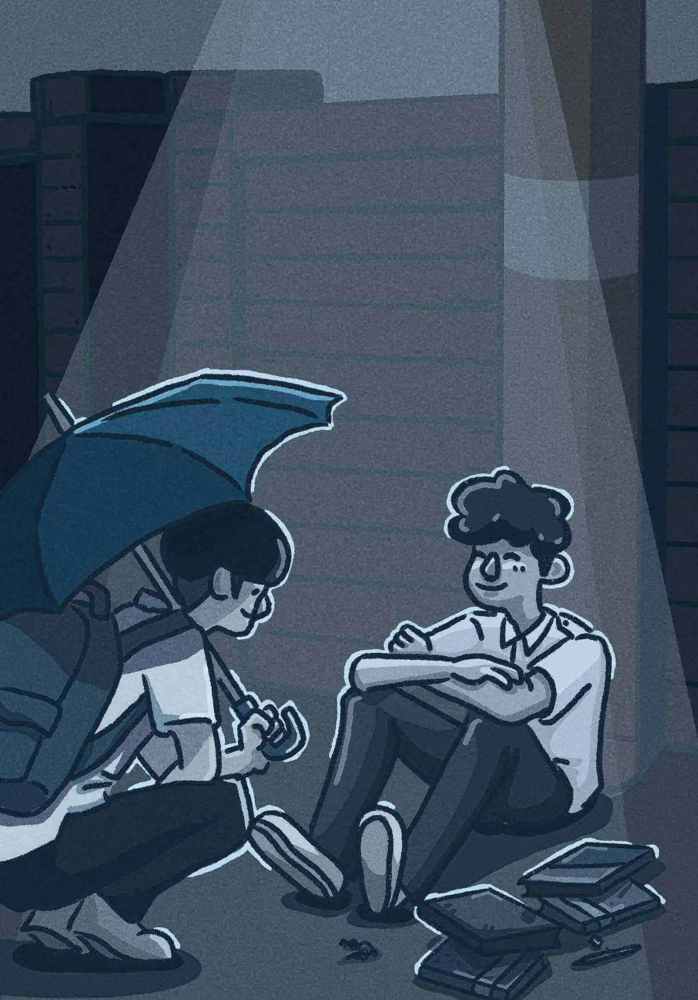

第10章 新的開端

小樹感到有人將自己從地上扶起，搖搖晃晃之間，視線慢慢恢復、清晰。揉揉雙眼，面前還是舊公寓的大門。那，剛剛是誰？「社長大人，你也太不小心了吧！」背後的聲音調侃打趣道。「小豬？你怎麼？」小樹轉頭一看，沒想到班上同學竟在地上幫自己收拾散落一地的課本。小豬是小樹的同班同學，只是一直沒怎麼打過交道。
「齁，兩年了耶，你不知道我們是鄰居嗎？剛剛還坐同一台公車好嗎？真是的。」
「啊，這，不，我都不知道耶，天啊。」小樹訥訥無言，下意識地搓揉雙手，有些緊張。
「好啦，這不怪你，誰叫你無論走路還是搭車，耳機都戴好戴滿，是說降噪也真的厲害，我好幾次叫你，都聽不見。」
「不是說不怪我嗎？」小樹心裡暗想，但還是不好意思地笑了。「啊，真的很感謝你耶，不然我剛剛差點回不來了！」小樹一臉真誠的望向小豬。
「回不來？」小豬挑眉。
小樹下意識摀住了嘴，接著放鬆開來，燦然一笑：「那是個很長的故事，如果你有興趣的話，我再慢慢說給你聽。」看著小豬一臉問號，小樹臉上不禁浮出一抹笑意。
回首望向驟雨中的台北市，小樹看到從前不曾注意到的風景，他有預感他的生活將不再一樣。